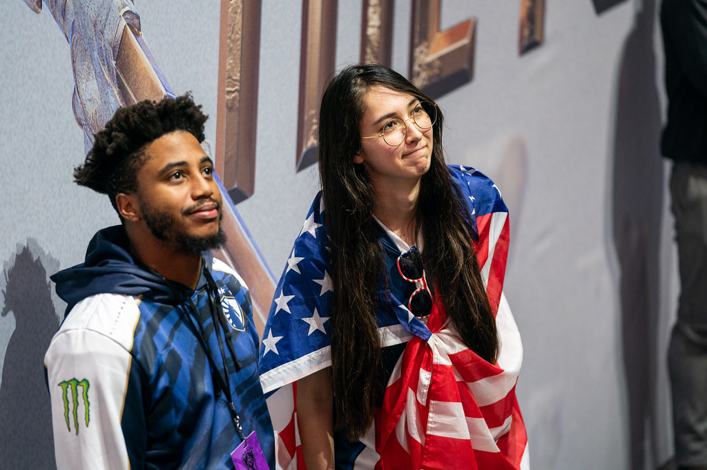

Sebagai salah satu Major Region, region NA seringkali dianggap sebagai region yang paling lemah dibandingkan tiga region lainnya pada setiap turnamen Internasional seperti World Championship. Meskipun mau mengusung roster Superteam sekalipun, tim tersebut masih saja menderita kegagalan.
World Championship tahun ini juga tidak jauh berbeda dibandingkan tahun-tahun sebelumnya. Meskipun datang dengan ekspektasi dan harapan besar usai meraih kesuksesan pada Mid-Season Invitational 2019 lalu, lagi-lagi tiga perwakilan NA gagal menjawab ekspektasi tersebut dan harus mengakhiri perjalanannya di babak grup.
Ketiga tim perwakilan NA sama-sama tampil kurang memuaskan sepanjang babak grup. Semua pemain mengalami penurunan performa dan gagal tampil maksimal. Mereka bahkan hanya sanggup mencetak kemenangan meyakinkan melawan tim-tim LMS atau tim-tim yang memang meremahkan mereka. Kegagalan ini membuat publik NA merasa marah dan kecewa.
Link wawancara dengan Travis Gafford: https://www.youtube.com/watch?v=4afs1ENM8t8
AD Carry Team Liquid, Doublelift juga merasakan hal serupa. Pada sesi interview bersama Travis Gafford, meskipun sudah bekerja cukup keras dan tampil sebaik-baiknya mereka masih mendapatkan hasil yang pahit.
“Kami semua bekerja cukup keras dan kupikir kami semua sudah tampil dengan baik sehingga Aku mengharapkan sesuatu yang baik tahun ini tanpa mencoba memunculkan hype tinggi, namun justru harus berakhir pahit,” ucap Doublelift kepada Travis Gafford.
“Kupikir mungkin ada alternate universe lain dimana kami bermain dan mendapatkan hasil yang lebih baik dan mungkin saja mampu mencapai prestasi yang lebih baik, namun kami tinggal di universe ini sehingga kami mau tak mau harus menerima kenyataan ini dan mencoba lagi,” tambahnya.
Menurut Doublelift, ada beberapa alasan mengapa Team Liquid gagal menjawab ekspektasi tersebut. Mulai dari tidak terbiasa dengan meta yang dimainkan oleh tim-tim lawannya, draft yang buruk, hingga performa panggung yang tidak seperti performa scrim.
“Grup kami memiliki sebuah meta yang dikuasai oleh Damwon Gaming dan Invictus Gaming, namun kami tidak pernah terekspos oleh meta tersebut karena sudah pasti kami tidak akan melakoni scrim melawan kedua tim tersebut untuk alasan yang jelas. Kami tidak terbiasa melawan champion yang mereka mainkan.”
“Selain itu ada beberapa hal yang berjalan buruk, seperti draft buruk yang tidak bisa disalahkan sepenuhnya kepada pelatih karena draft tersebut muncul berdasarkan hasil latihan.”
“Kami memang berlatih melawan tim-tim terkuat dunia dan mendapatkan hasil yang baik, namun kami tampil buruk di atas panggung seolah-olah apa yang kami coba tidak bisa berjalan dengan baik. Intinya, kami bukanlah tim yang cukup baik,” jelasnya.
Pemain yang sudah aktif sejak tahun 2011 ini juga tak malu mengakui bahwa regionnya NA memang sangatlah lemah dibandingkan Major Region lainnya.
“Hasil ini seolah-olah menegaskan bahwa region kami (NA) sangatlah lemah. Aku selalu kesulitan di panggung Internasional sementara di panggung Domestik seolah-olah tidak ada kompetisi.”
“Secara individu dan tim, timku juga bernasib sama. Tidak banyak tim domestik yang bisa menantang kami. Region kami benar-benar lemah, sangat lemah.”
“Mungkin Aku terdengar seperti menyalahkan NA atas kegagalan kami, namun begitulah kenyataannya. Region kami memiliki banyak pemain bertalenta dan banyak ide menarik, tapi hal-hal tersebut tidak bekerja dengan baik. Kami selalu terpaksa belajar dengan cepat tanpa banyak waktu sementara tim-tim lain sudah mempelajarinya lebih dulu.”
Doublelift juga meyakini bahwa masih ada harapan bagi regionnya, namun harapan tersebut sangat kecil. “Viewership LCS masih tinggi, masih ada fans dan beberapa hal yang mampu mendorong seseorang untuk menjadi profesional di NA, namun harapan tersebut seringkali mati saat Worlds.”
“Harapan akan selalu ada dan Aku tidak ingin menyebut ini seperti siklus tahunan bahwa kami akan mencoba lagi tahun depan, kemungkinan akan selalu ada dan bisa saja terjadi tahun depan.”